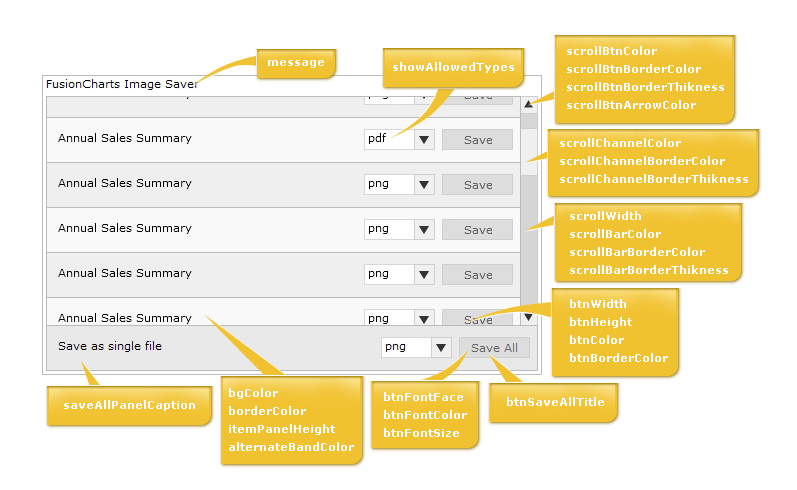

Exporting Charts as PDF or Images > Client-side export > Component UI |
As we've already seen earlier, the Export Component UI has two modes:
In both modes, you can customize the colors, fonts and titles of export component. Before we get into the attributes that actually does this, let's first quickly look at what the various elements of the Export Component are. The following diagram highlights the important elements: |
|  |
| Configuration attributes |
To configure any of the attributes of Export Component, the same needs to be specified in JavaScript (where the Export Component has been initialized). An example code is shown below: |
<div id="fcexpDiv" align="center">FusionCharts Export Handler Component</div> <script type="text/javascript"> var myExportComponent = new FusionChartsExportObject("fcExporter1", "../../FusionCharts/FCExporter.swf"); //Customize the component properties //Width and height myExportComponent.componentAttributes.width = '400'; myExportComponent.componentAttributes.height = '60'; //Background color myExportComponent.componentAttributes.bgColor = 'ffffdd'; //Border properties myExportComponent.componentAttributes.borderThickness = '2'; myExportComponent.componentAttributes.borderColor = '0372AB'; //Font properties myExportComponent.componentAttributes.fontFace = 'Arial'; myExportComponent.componentAttributes.fontColor = '0372AB'; myExportComponent.componentAttributes.fontSize = '12'; //Message - caption of export component myExportComponent.componentAttributes.showMessage = '1'; myExportComponent.componentAttributes.message = 'Export the chart first, and then click on this button to save'; //Button visual configuration myExportComponent.componentAttributes.btnWidth = '200'; myExportComponent.componentAttributes.btnHeight= '25'; myExportComponent.componentAttributes.btnColor = 'E1f5ff'; myExportComponent.componentAttributes.btnBorderColor = '0372AB'; //Button font properties myExportComponent.componentAttributes.btnFontFace = 'Verdana'; myExportComponent.componentAttributes.btnFontColor = '0372AB'; myExportComponent.componentAttributes.btnFontSize = '15'; //Title of button myExportComponent.componentAttributes.btnsavetitle = 'Save the chart' myExportComponent.componentAttributes.btndisabledtitle = 'Waiting for export'; //Render the exporter SWF in our DIV fcexpDiv myExportComponent.Render("fcexpDiv"); </script> |
As you can see above, we've specified various parameters for export component. This is done in the following syntax: Component_Instance.componentAttributes.Parameter_name = 'Value'; Click here to see the list of attributes that can be customized for this component. |